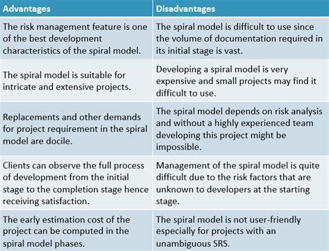

Spiraalmudelit kirjeldas esimest korda Barry Boehm oma 1986 a. artiklis. Protsessi kulgemist kujutab spiraal. Esimene kordus võib olla näiteks seotud süsteemi teostatavuse uurimisega, teine nõudmiste kirjeldamisega, järgmine kavandamisega jne. Mitu kordust on enamasti seotud tarkvara realiseerimisega, kus tema ehitamine toimub inkrementaalselt. Kuid kindlasti ei tohiks spiraali korduseid võrdsustada tavapäraste arendusprotsessi faasidega. Iga kordus on jaotatud 3 kuni 6 sektorisse (erinevad autorid jagavad erinevalt). Iga kordus algab lähema eesmärgi kavandamise ja riskide hindamisega ning lõppeb nö kliendiga - ehk eesmärk peab saama täidetud ja kontrollitud. Sektorite töömahukus ei pruugi olla ühesugune. Boehm'i järgi on sektoreid neli:
Määratakse selle faasi ehk korduse eesmärgid, piirangud protsessis, tulemused, juhtimisplaan, võimalikud riskid ning alternatiivsed strateegiad lähtudes riskidest.
Iga leitud riski jaoks tehakse analüüs, võetakse midagi ette riskide maandamiseks (nt risk, et nõudmised pole adekvaatsed: tehakse prototüüp)
Valitakse arendusmudel, mis lähtub hinnatud riskidest (mudel peab olema selline, mis riske vähendada aitab). Nt kui kasutajaliides on suurim risk, siis võib aidata prototüüpide tegemine.
projekt vaadatakse üle ja tehakse otsus, kas jätkata järgmisel kordusel, kui otsustatakse jätkata, tehakse järgmise faasi jaoks plaan.

Plusside miinuste tabel:
